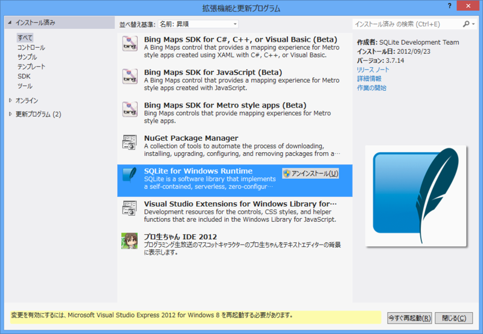
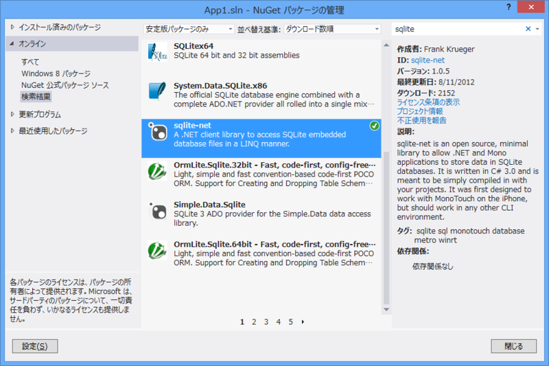
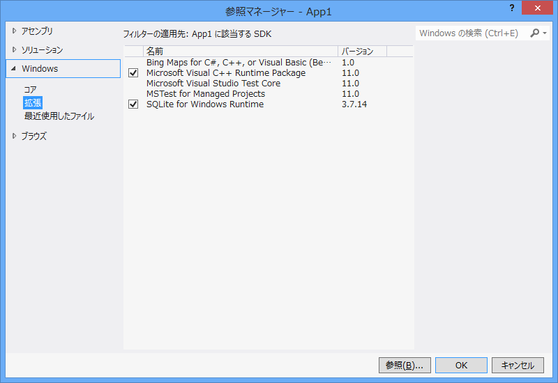
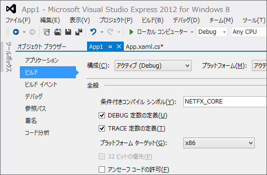
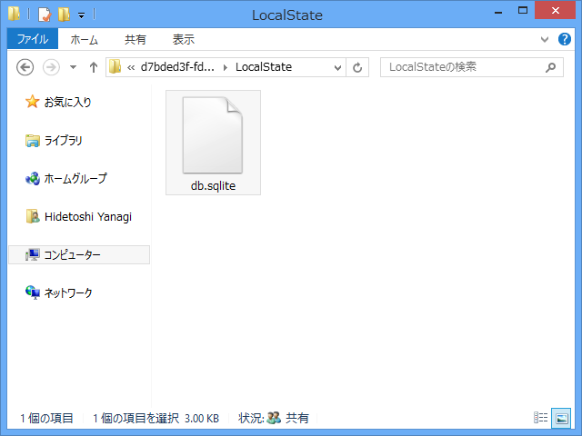
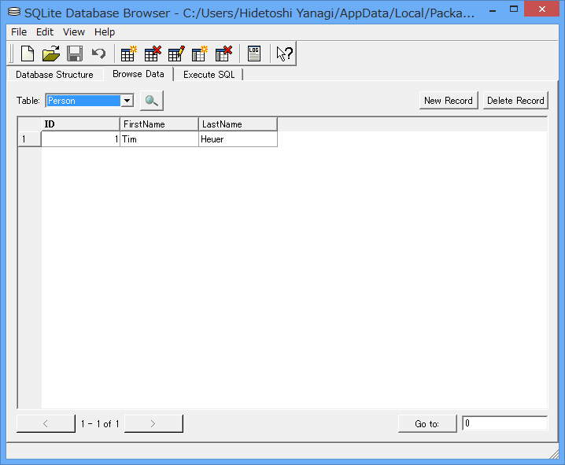

Windows ストアアプリでデータベース（SQLite 3）を使う
公開日：

UPDATED HOWTO: SQLite with Windows 8 apps
http://timheuer.com/blog/archive/2012/08/07/updated-how-to-using-sqlite-from-windows-store-apps.aspx
@kaorun さんのはてブ経由で知った。前試したときはうまくいかなかったのだけど、今回はうまくできたっぽい。ポータブルなデータベースはやっぱりほしいよねぇ……。
拡張機能「SQLite for Windows Runtime」をインストール

グローバルにインストールされるので、最初に一度やればよい。
NuGet パッケージ「sqlite-net」をインストール

これはプロジェクトごとにインストール。マネージドで扱うためのラッパーのようで、C# のソースコードで提供されている。Visual Basic で使いたい場合は一工夫必要みたい。
参照の追加

「Microsoft Visual C++ Runtime Pakage」と「SQLite for Windows Runtime」を参照に追加。
ビルドターゲットを変更

Any CPU では動かないので、ほかの適当なものに変えておく。まぁ、とりあえず x86 とかでいいんじゃないかな。
動かしてみる。
空のテンプレートで、サンプルコードを試してみる。
namespace App1 { sealed partial class App : Application { public App() { this.InitializeComponent(); this.Suspending += OnSuspending;LoadData(); }
： ：
public void LoadData() { var dbPath = Path.Combine( ApplicationData.Current.LocalFolder.Path, "db.sqlite");
using (var db = new SQLite.SQLiteConnection(dbPath)) { db.CreateTable<Person>();
db.RunInTransaction(() => { db.Insert(new Person() { FirstName = "Tim", LastName = "Heuer" }); }); } } } }
public class Person { [SQLite.AutoIncrement, SQLite.PrimaryKey] public int ID { get; set; } public string FirstName { get; set; } public string LastName { get; set; } }

LocalFolder に db.sqlite ができていた。結構簡単に扱えそうで、こりゃいいな。

データもちゃんと入っていたよ！
SQLite の GUI ブラウザは 窓の杜 - SQLite Database Browser あたりが定番かな。